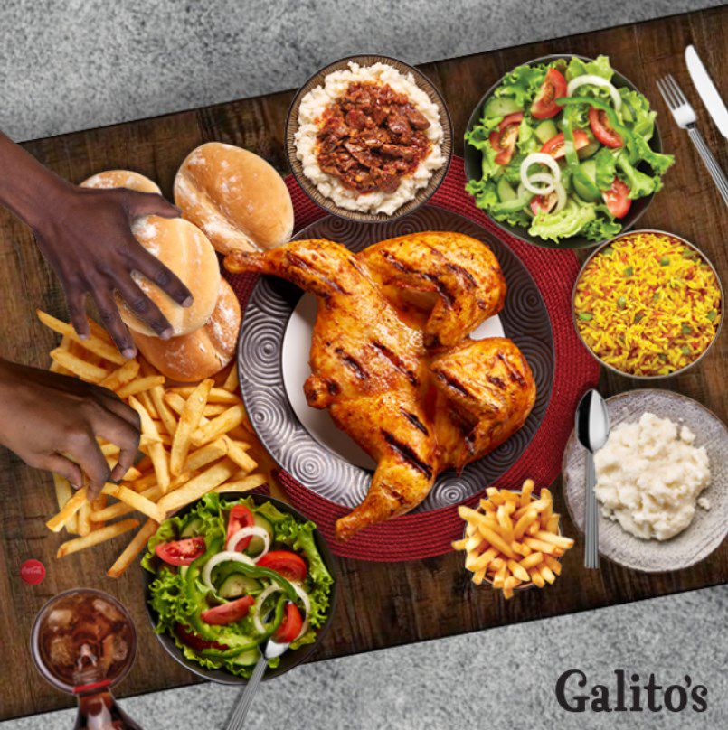
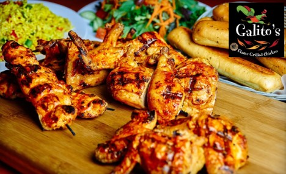
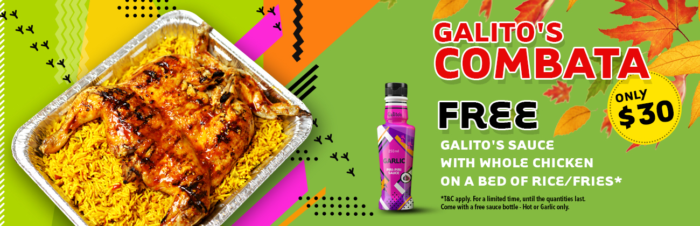

GALITO'S
The Galito’s story began in the Mpumalanga City of Nelspruit, when the first Galito’s restaurant opened its doors in 1996. With a powerful combination of great tasting chicken, excellent service and pride, Galito’s soon became a huge success. Within a few short years Galito’s had become a Lowveld favourite, and with the valued participation and support of close friends, Galito’s had opened a closely-knit family of 8 restaurants by mid-2002.
During 2003 Galito’s decided to share its unique flavours with the rest of South Africa. It was at this point that the Galito’s Brand began to develop, and the franchising efforts took-off in earnest. Galito’s has since opened to huge acclaim around South Africa, opening in Gauteng, Kwa-Zulu Natal and Limpopo.
During 2006, Galito’s boldly spread its wings into Africa, launching extremely successful restaurants in Kenya & Ghana. The marked success of these restaurants prompted a large amount of interest, and promised great potential for future growth throughout Africa. In 2009, Galito’s then opened its first store in Lusaka, Zambia. The immediate success of this store prompted the opening of 3 more Lusaka restaurants in relatively quick succession. These restaurants have traded exceptionally well, resulting in the recent expansion into Zambia’s neighbouring country of Malawi.
In 2010 Galito’s went global, opening it’s first store off the African continent in Toronto, Canada. The Canadian public responded favourably to the fresh look & taste of Galito’s, and within a year, 2 more Galito’s restaurants were opened.
2012’s big news was that at last Galito’s reached the neighbouring Kingdoms of Swaziland and Lesotho. the overwhelming response from our Swazi customers motivated the opening of 2 more stores within 12 months. 2012 also saw the expansion into the DRC. 2013 saw developments into Mozambique underway, with our first Maputo restaurant opening. 2014… Galito’s recently signed a Master Franchise Licence with Tablez Food Company, the food and beverage arm of multi billion dollar Lulu International in the United Arab Emirates, to develop the Galito’s brand across the Middle East, India and Sri Lanka.
  